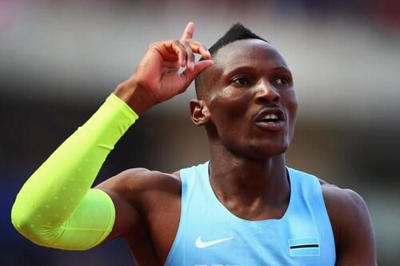

Athletics Achievements
Isaac Makwala
One of Africa’s fastest sprinters, Makwala has represented Botswana with distinction at global events. He gained international attention when he ran a solo 200m heat at the 2017 World Championships to qualify for the final after recovering from illness — a powerful moment that inspired many around the world.
Letsile Tebogo
Letsile Tebogo made history by winning Botswana’s first-ever Olympic gold medal in the 200m race at the 2024 Paris Olympics. In an incredible upset, he defeated favorites like Noah Lyles, showing that Botswana is a rising force in sprinting on the world stage.

4x400m Relay Team – Tokyo 2020
Botswana's 4x400m men's relay team won a historic bronze medal at the Tokyo 2020 Olympics. Their teamwork and determination captured global attention and brought great pride to the nation.

4x400m Relay Team – Paris 2024
The Botswana 4x400m men's relay team elevated their legacy by winning a silver medal at the 2024 Paris Olympics. Their performance showed continuous progress and resilience, further establishing Botswana as a powerhouse in athletics.